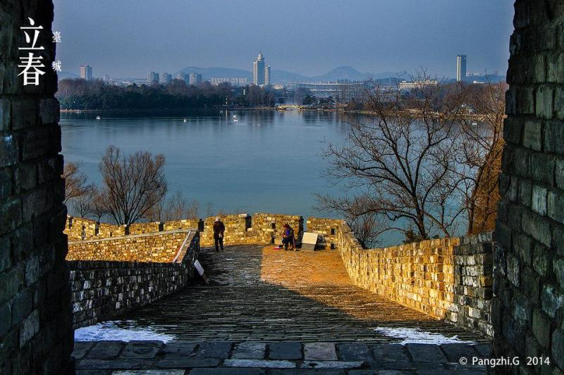
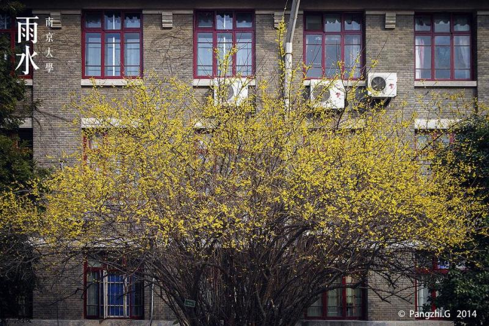
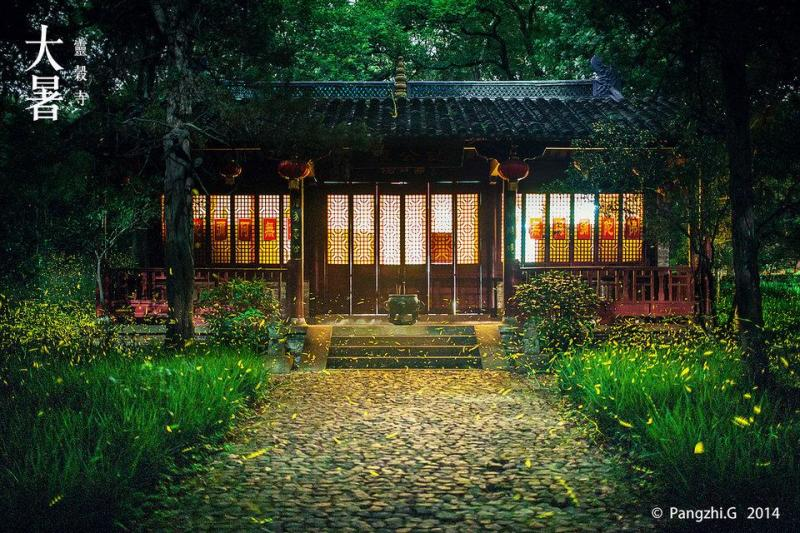

| 位置境域 | |
| 南京位于长江下游中部地区， 江苏省西南部，是 国家区域中心城市（华东），中国 东部战区司令部驻地， 长三角辐射带动中西部地区发展的国家重要 门户城市，也是“一带一路”战略与长江经济带战略交汇的节点城市，南京都市圈核心城市。地理坐标为北纬31°14″至32°37″，东经118°22″至119°14″。 市中心 新街口地理坐标为北纬32°02'38"、东经118°46'43"。 总面积6587.02km²，2016年 建成区面积1125.78km²。 |  |
| 地形地貌 | |
| 南京地貌特征属宁镇扬 丘陵地区，以低山缓岗为主，低山占土地总面积的3.5%，丘陵占4.3%，岗地占53%，平原、洼地及河流湖泊占39.2%。 宁镇山脉和江北的 老山横亘市域中部，南部有 秦淮流域丘陵岗地南界的横山、东庐山。南京平面位置南北长、东西窄，成正南北向；南北直线距离150公里，中部东西宽50～70公里，南北两端东西宽约30公里。南面是低山、岗地、河谷平原、滨湖平原和沿江河地等地形单元构成的地貌综合体。 |  |
| 气候特点 | |
南京属北 亚热带湿润气候，四季分明，雨水充沛。常年平均降雨117天，平均降雨量1106.5毫米，相对湿度76%，无霜期237天。每年6月下旬到7月上旬为梅雨季节。年平均温度15.4°C，年极端气温最高39.7°C，最低-13.1°C，年平均降水量1106毫米。 南京进入春季是4月1日左右，进入夏季是6月8日左右，进入秋季是9月18日左右；进入冬季是11月12日左右。冬、夏季长，而春、秋季略短。南京春秋短、冬夏长，冬夏温差显著，由于大气环流的变化以及南京不断的植树造林，南京夏天的炎热程度与 江南、 华南其他都市相比大为减轻，故已摘去“火炉”的称呼。 |
|
| 水文资源 | |
| 南京水域面积达11%以上，有 秦淮河、 金川河、 玄武湖、 莫愁湖、 百家湖、 石臼湖、 固城湖、 金牛湖等大小河流湖泊，长江穿城，沿江岸线总长近200公里。境内共有大小河道120条，分属两江（长江、青弋江—水阳江）、两湖（ 固城湖、 石臼湖）、两河（ 滁河、 秦淮河），以跨省、市的流域划分水系，可划分为长江南京段、滁河、秦淮河、青弋江—水阳江四大水系。 |  |